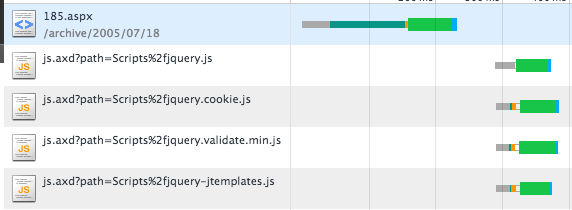

4. HTTP¶
WWW에서 전자문서 주고 받기 위해 고안된 프로토콜이다.
4.1. 지속 연결 vs 비지속 연결¶
비지속 연결은 매번 자원을 요청할때 새로운 TCP Connection을 생성하는 것을 뜻한다. 예를들어 페이지가 기본 HTML파일과 10개의 JPEG 이미지로 구성된다고 가정하자.
URL : http://www.someSchool.edu/someDespartment/home.index
연결 수행 과정은 다음과 같다.
- someSchool 호스트의 80포트로 TCP 연결을 요청한다. 이때 TCP 핸드셰이킹이 발생하고 연결이 성공한다.
- 80포트의 /someDespartment/home.index 라는 Path로 HTTP GET 요청 메세지를 작성한 뒤 1)에서 연결된 TCP 소켓을 통해 전송한다.
- someSchool.edu 서버는 소켓으로 전달된 HTTP 요청 메세지를 분석한다. 그리고 Path에 있는 리소스를 찾은 뒤 압축하여 HTTP 응답 메세지를 클라이언트에게 전송한다.
- 클라이언트는 HTTP 응답 메세지를 완벽하게 전달 받으면 연결을 종료한다. 압축된 메세지를 해제한 뒤 HTML에서 이미지를 찾는다.
- 이미지를 1~4의 방법으로 다시 요청한다.
위의 방식대로 브라우저가 요청-응답 쌍을 다른 TCP Connection에서 수행한 것 이다. 비지속연결은 11번의 연결이 이뤄지게 된다. 이때 10번의 이미지 요청은 동시에 소켓을 열어서 요청할 수 있다. 이를 동시 요청이라고 하며 응답시간을 줄일 수 있다.
RTT란 HTTP요청을 하고 응답을 수신할때 까지 걸리는 시간이다. 이때 RTT는 전송 지연, 전파 지연, 패킷 큐잉 지연, 패킷 처리 지연을 포함한 시간이다. 위의 경우 2RTT + 응답파일 전송 시간(TCP 3-핸드셰이킹 + HTTP요청 응답 + 응답 파일 전송 시간) 이다.
지속 연결은 하나의 TCP Connection을 생성하고 그 연결을 통해 모든 요청을 처리하는 것이다. 기본적으로 하나의 Connection을 통해 여러개의 요청을 파이프라이닝 기법을 활용하여 전송하게 된다.
지속 연결 헤더:
Connection: Keep-Alive
HTTP 1.0 기준으로 클라이언트에서 지속연결을 원할 때 Keep-Alive를 헤더에 담아서 요청을 보낸다. 서버는 요청을 받고 역시 헤더에 담아서 응답한다. 이 TCP 커넥션을 통해 다른 요청을 보낼 수 있다. 서버나 클라이언트 측에서 더이상 연결이 필요없다고 판단할 경우 연결을 종료한다.
HTTP 1.1 기준으로 달리 명시되 있지 않으면 모든 연결은 지속연결로 간주된다. 하지만 각 서버마다 타임아웃(TIEMOUT)이 존재한다.
비지속 연결을 하고 싶다면 다음처럼 명시한다.:
Connection: close
서버가 지속 연결을 멈추고 싶을때도 사용해라:
Connection: close
지속 연결은 서버 가용성에 문제를 일으킬 수 있으나 RTT(Round trip time)을 감소 시키고 소켓 수를 감소 시킨다.
주항색 선 은 새로운 TCP 연결이 발생했다는 것을 의미한다.
2번째 요청에서 서버는 Connection: close 를 발생시켰다. 그래서 3번째 요청에 다시 3-핸드셰이킹을 한 것을 볼 수 있다.
4.2. 컨텐츠 압축¶
압축은 HTTP 요청의 Accept-Encoding: gzip, deflate, sdch 과 HTTP 응답의 Content-Encoding: deflate 이 관련이 있다.
먼저 클라이언트가 처리할 수 있는 압축 알고리즘을 Accept-Encoding에 명시한다. 서버는 컨텐츠를 압축한 뒤 Content-Encoding에 명시해서 함께 보낸다. 따라서 컨텐츠 압축을 해제해야만 원래 콘텐츠를 확인할 수 있다.
4.3. 컨텐츠 타입¶
4.3.1. multipart/form-data¶
multipart/form-data는 경계(boundary)로 구분된 연속된 데이터를 나타내는 형식을 뜻한다. 주로 POST 메서드일때 사용된다.
경계(boundary)는 HTTP 헤더 뒤에 "--"와 "경계값"으로 이루어진 시퀀스이며 구분자이다.
경계는 Content-Type 헤더 의 boundary 매개변수에 포함된다.:
Content-Type: multipart/form-data; boundary=-------------------12345678912345\r\n
경계(boundary)는 바디의 시작(~~rn), 파트 사이(rn~~rn), 마지막(rn~~rn에 위치한다. 또한 경계값은 각 파트의 데이터에 포함되지 않는 값으로 구성되어야 한다.
4.3.1.1. 파트(Part)¶
각 파트는 Content-Disposition 헤더 를 포함해야 하며 반드시 name 매개변수를 포함해야한다.:
Content-Disposition: form-data; name="age"
전송하려는 데이터가 파일이라면 파일의 이름도 포함해야 하며 filename 매개변수를 포함해야한다. 일반적으로 filename 매개변수의 값은 UTF-8로 인코딩되어 전달된다:
Content-Disposition: form-data; name="age"; filename="hello.jpeg"
수신 서버나 에이전트는 filename의 유효성이나 중복을 확인하지 않고 맹목적으로 사용해서는 안된다.
또한 각 파트는 Content-Type 헤더 를 포함할 수 있다.(text/plain, application/octet-stream, 등등):
Content-Type: application/pdf
4.3.2. application/x-www-form-urlencoded¶
application/x-www-form-urlencoded는 여러개의 key,value 쌍을 전송할때 사용된다. 알파벳이 아닌 문자는 퍼센트 인코딩되어 전송되며 POST 메서드일때 사용된다.
4.4. Stateless¶
HTTP 프로토콜은 상태를 유지하지 않는다. 반면 SSH 프로토콜은 서버에서 클라이언트 상태를 유지한 상태로 데이터를 주고받는다. 이를 위해 서버에서는 세션값을 이용해 클라이언트 상태를 유지한다. 세션은 세션메모리에 저장되며 이를 찾는 검색값을 세션 아이디라고 한다.
4.5. 쿠키¶
서버가 사용자한테 전송하는 작은 데이터이며 주로 HTTP에서 상태를 저장할때 사용한다. 쿠키는 영속적인 쿠키, 세션 쿠키로 나눠진다. 영속적인 쿠키는 디스크에 저장되며 세션 쿠키는 메모리에 저장된다. 쿠키는 브라우저의 네트워크 탭이나 document.cookie로 확인할 수 있다.
최근에는 주로 세션 관리(로그인, 로그아웃) 목적으로 활용된다. 이와는 별개로 개인화, 행동 분석을 위해 활용하기도 했으나, localStorage API로 대체되고 있다.
4.5.1. set-cookie 헤더¶
set-cookie는 클라이언트에 쿠키를 전달할때 사용하는 헤더이다. set-cookie로 쿠키 전송시 여러가지 속성을 줄 수 있다.
HttpOnly 속성을 부여할 경우 쿠키를 document.cookie API로 확인할 수 없다. 이는 XSS 방지를 위한 것이다. Secure 속성은 SSL위에서만 쿠키를 전송하도록 강제할 수 있다. Domain 속성은 쿠키가 전송될 도메인을 설정할 때 사용한다. Domain 속성이 없을 경우 현재 페이지의 호스트를 기본값으로 사용한다. Path 속성은 쿠키가 전송될 경로를 설정할 때 사용한다.:
Set-Cookie: id=aaaa; Expires=Wed, 1 Feb 2018 01:11:00 GMT; Secure; HttpOnly; Domain=example.com; path=/
4.6. 인코딩¶
4.6.1. 퍼센트 인코딩(Percent-Encoding)¶
아스키가 아닌 문자와 스페이스, 제어문자등을 인코딩하는 방법을 나타낸 표준이다. 각각의 바이트는 %ff 처럼 %와 16진수 시퀀스로 인코딩된다. 예를들어 "안녕" 이라는 문자열은 %EC%95%88%EB%85%95 와 같이 인코딩된다. RFC3986에 정의되어 있다.
4.7. CORS와 사전인증(preflight)¶
기본적으로 브라우저는 XMLHttpRequest를 이용해 같은 도메인의 자원에만 접근할 수 있다. 이를 same-origin 정책이라 한다. same-origin 정책만 존재 했을때는 다른 도메인으로 요청은 항상 실패했다. 개발자들은 다른 도메인에 대한 접근을 허용하는 기술을 벤더사에 요청하였고 CORS라는 기술이 등장하게 되었다.
CORS(Cross-Origin Resource Sharing)는 추가적인 HTTP 헤더를 이용해서 현재 도메인에서 다른 도메인의 자원에 접근할 수 있는지 알려주는 기술이다. CORS는 Simple Request나 preflight 방식으로 나눠진다.
4.7.1. Simple Request¶
GET, POST, HEAD, application/x-www-form-urlencoded, multipart/form-data, text/plain 와 같은 헤더가 method와 content-type에 포함되어 있을때 리소스 요청 후 응답으로 Access-Control-Allow-Origin 헤더를 받아 허용 여부를 결정하는 방식이다.
Access-Controll-Allow-Origin: *
위 헤더는 모든 도메인에서의 접근을 허용한다. 발생 조건은 링크 에 자세히 나와 있다.
4.7.2. preflight¶
GET, POST, HEAD외 다른 값을 method에 포함시켰을때 preflight 요청 후 응답으로 접근 제어 헤더를 받아 결정하는 방식이다. 그 이후 리소스 요청이 발생하게 된다. 발생 조건은 링크 에 자세히 나와 있다.
대표적으로 사용되는 헤더는 다음과 같다.:
Access-Control-Allow-Origin: http://a.com
Access-Control-Allow-Methods: POST, GET, OPTIONS
Access-Control-Allow-Headers: X-PINGOTHER, Content-Type
Access-Control-Max-Age: 86400
a.com에서 POST, GET, OPTIONS 메서드 요청을 할 경우 허용하겠다는 의미이다.
4.8. 참조¶
- HTTP 스펙: https://tools.ietf.org/html/rfc2616
- Multipart/form-data: https://tools.ietf.org/html/rfc7578
- Cookie: https://developer.mozilla.org/ko/docs/Web/HTTP/Cookies